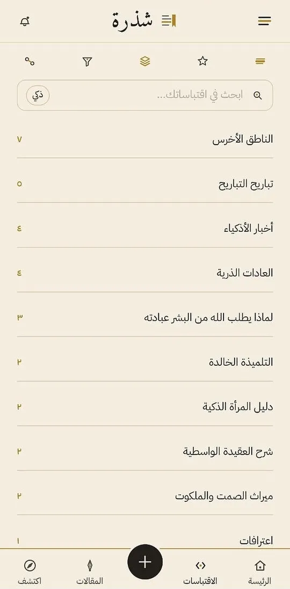
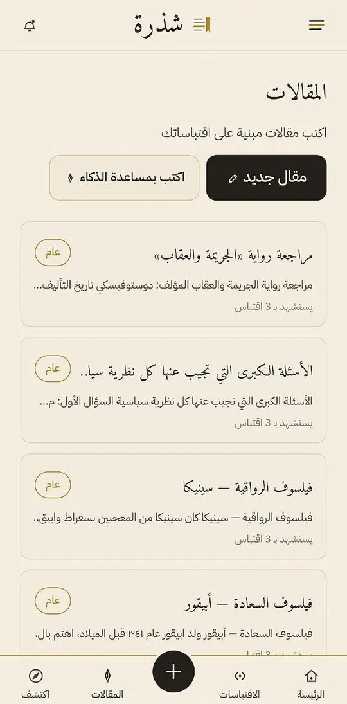
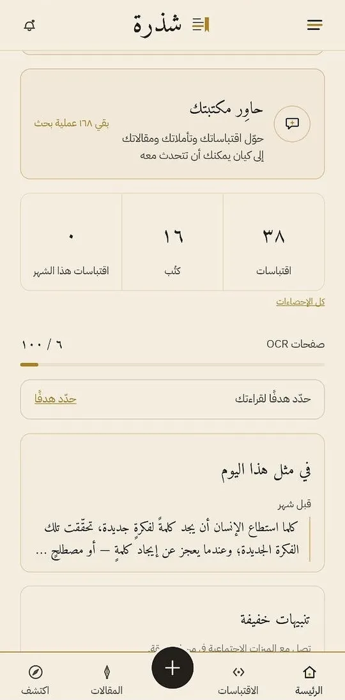

المزايا
من سطر يستوقفك إلى مقال تكتبه
التقط في لحظتها
صوّر صفحة الكتاب فيُستخرج النص العربي أو الإنجليزي، أو اكتبه بنفسك، واكتب تأمّلك معه في الخطوة نفسها.
مكان واحد
كل اقتباساتك مع كتبها ومؤلفيها وتأمّلاتك، مرتّبة ومجمّعة حسب الكتاب أو المؤلف أو الموضوع.
الصلات والأنساق
اربط بين اقتباسين وسمِّ الصلة بينهما، ودَع شذرة تجمع ما تقارب في المعنى في أنساق.
ابحث بالمعنى
اعثر على الاقتباس وإن نسيت لفظه، واسأل مكتبتك فتجيبك من اقتباساتك أنت.
اكتب منها
ابنِ مقالك من اقتباساتك وصلاتها، ثم اجمع مقالاتك في كتاب.
شذرة اليوم
كل يوم اقتباس من مكتبتك يعود إليك، على الشاشة الرئيسية أو في إشعار الصباح.
من الداخل
الرئيسية أضف اقتباسًا مكتبتك التجميع حسب الكتاب المقالات حاور مكتبتك
شاشات التطبيق



أسئلة
أسئلة شائعة
هل التطبيق مجاني؟
نعم.
هل اقتباساتي ظاهرة للناس؟
اقتباساتك خاصة بك، إلا ما تختار أنت نشره.
هل يعمل بلا إنترنت؟
نعم على أندرويد: مكتبتك كاملة على جهازك، وما تضيفه يُرفع حين يعود الاتصال.
هل أستطيع تصدير مكتبتي؟
نعم، مثلًا إلى جدول Excel فيه اقتباساتك وتأمّلاتها.